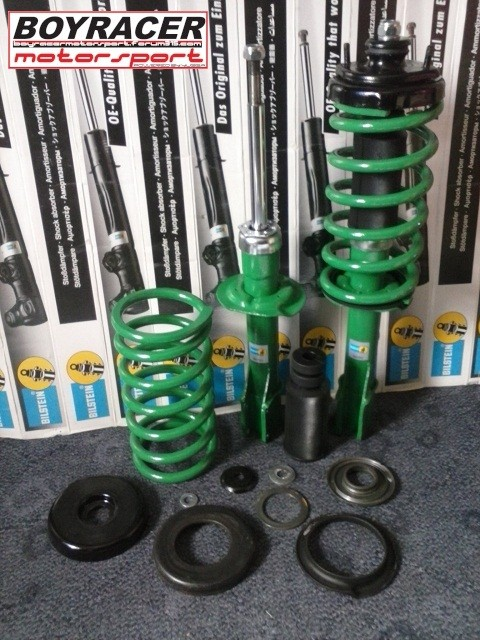
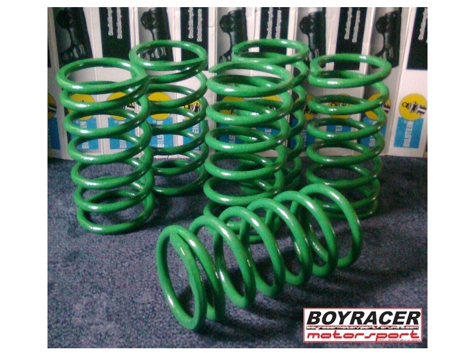

Poboljšanja se i ovde dele spram toga šta želite od automobila. Ne treba očekivati povećanje udobnosti jer je fabrički sistem oslanjanja najudobniji.
-Najjeftiniji način unapređivanja, tačnije spuštanja vašeg automobila je sečenje opruga, ALI SE TO NE PREPORUČUJE!! -Najbolji način za spuštanje i poboljšanje ležanja je ugradnja opruga sa Zastave 750/850 i Zastava Sport gasnih amortizera, a pozadi se "pegla" gibanj.
Naravno skuplji način je da se kupe specijalni amortizeri, koji su gasno punjeni, ali i tvrđe i takođe kraće opruge.
 